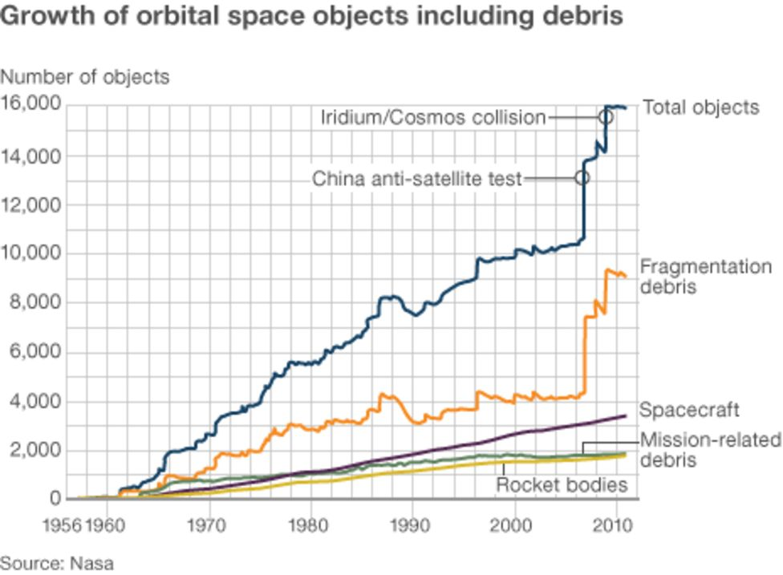

Space debris is Defunct human made objects in space, primarily orbiting earth.
`There are an estimated 500,000 undocumented objects between 1 and 10 cm and 10s of millions smaller than a cm` (Baiocchi and Welser, 2010).
They Travel at very high speeds, making them very dangerous if they collide with something.
`In a Hubble telescope repair mission, Nasa estimated that astronauts faced a 1 in 89 chance of being fatally injured by space debris while
operating on the telescope outside the shuttle` (Baiocchi and Welser, 2010).
In order to solve this there are many researchers developing solutions like designing rockets that dispose of themselves to avoid creating debris.
What is space debris?
Space debris is Defunct human made objects in space, primarily orbiting earth.
It could be anything from an orbiting booster rocket, to a tiny shard of metal less than 1 cm in length.
The European space agency estimates that in 2025 there are at least 1.2 million objects greater than 1cm in orbit around earth,
with 54 000 of them being greater than 10 cm.
Impacts of space debris
Space debris can be very hazardous to space missions with small undocumented objects collide with spacecraft at high speeds.
`The primary threat to space operations comes from the smaller and more numerous uncatalogued debris because in low earth orbit
objects have velocities of 7 or 8 km/s with respect to the ground, meaning even very small objects can impart a tremendous amount of energy if they collide with other objects,
this is compounded by the fact that they remain uncatalogued so we do not know where they are or how many there are of them` (Baiocchi and Welser, 2010).
This is exacerbated by the objects grouping together in large clouds, meaning that you will often encounter massive quantities of objects at a time.
“The artificial space debris tended to cluster in huge clouds sometimes over 1000km in size” (Mulholland and Veillet, 2000).
`When collisions were recorded, an estimated 80% of them were from these huge, clustered clouds` (Mulholland and Veillet, 2000).
This can cause irreparable damage to spacecraft, satellites and machinery and can even threaten the lives of astronauts.
`On average, per launch, more than one window on spacecraft must be replaced due to impact pitting` (Mulholland and Veillet, 2000)“Some effects are trivial,
like having debris cross the field of view during long photographic exposure, while some are a lot more serious like debris causing physical damage to spacecraft and their instruments,
sometimes even putting astronomical data gatherers or spacecraft out of operations, sometimes permanently because of irreparable damage” (Mulholland and Veillet, 2000).
`In a Hubble telescope repair mission, Nasa estimated that astronauts faced a 1 in 89 chance of being fatally injured by space debris while operating on the telescope outside the shuttle`
(Baiocchi and Welser, 2010). The number of objects in orbit has increased massively over the last 70 years going from nothing to 16,000 documented objects in 2010 as shown in figure 1.

The image shows the increase in types of orbital debris over time until 2010. This demonstrates how many few objects are documented and tracked as even though this shows 16 000 total objects
with about 9000 being small fragments, as mentioned earlier, it is estimated that there are 1.2 million undocumented objects in orbit between 1 and 10 cm and 140 million smaller than a cm.
While there have not been to many severe collisions yet, with the number of objects increasing it becomes increasingly likely.
There have already been a number of near misses that could have cost billions of dollars and multiple lives,
for example: “In 2009 a stray motor chunk hurtled toward the International Space Station. Cruising at an altitude of 220miles,
astronauts aboard the 100 billion dollar laboratory were going about their daily chores at around noon EDT when they received a warning-prepare for possible impact.
The crew was directed to scramble into the stations equivalent of a lifeboat, an attached Russian-made Soyuz capsule. It would give them a chance to abandon ship, if necessary.
After a few minutes, the motor zipped by, missing the ISS by just a few miles, in space terms a close call” (Adilov, Alexander and Cunningham, 2015).
What are we doing about it?
With orbital debris making missions in space increasingly difficult and dangerous as well as threatening our satellites, what are we doing about it?
There are many researchers trying to develop ways of capturing debris and disposing of it safely, but it won't solve the problem unless we fix the root cause
which is why there are international guidelines. “While not all satellites currently comply with international guidelines, more and more space actors are attempting to stick to the rules.
In the last decade, 15-30% of objects, or ‘payloads’ launched into non-compliant orbits in the low-Earth orbit region (excluding spacecraft related to human spaceflight)
had attempted to comply with debris mitigation measures. Between 5% and 20% did so successfully” (ESA, 2020).
“Between 40 and 80% of those in a non-compliant low-Earth orbit this decade attempted to comply with debris mitigation measures.
Altogether, 30-70% of naturally non-compliant rockets cleared low-Earth orbit successfully” (ESA, 2020).
“Around 88% of small payloads launched into this region will naturally adhere to space debris mitigation measures due to their low altitude,
meaning they break up in Earth’s atmosphere” (ESA, 2020). “Between 30-60% of all satellite mass (excluding from human spaceflight)
is estimated to adhere to end-of-life guidelines for the same reason” (ESA, 2020).
Conclusion
In conclusion, space debris is a very pressing problem that must be solved quickly to prevent possible disaster with the satellite network and possible loss of life,
but there are many people working on solutions and preventative measures so it is likely than in future years it will be much less of a problem,
but only if we continue to work on it.
References
Baiocchi, D and Welser, W. (2010) Confronting space debris. Santa Monica: RAND
Mulholland, J.D. Veillet, C. (2000) ` A Space Debris Primer for Astronomers`
” Space Debris”, Dordrecht Vol. 2, Iss. 4, 295-317
Adilov, N; Alexander, P.J; Cunningham, B.M.(2015) “An Economic Analysis of Earth Orbit Pollution”
Environmental and Resource Economics; Dordrecht Vol. 60, Iss. 1: 81-98
(2020) “The current state of space debris”, Space safety, ESA,